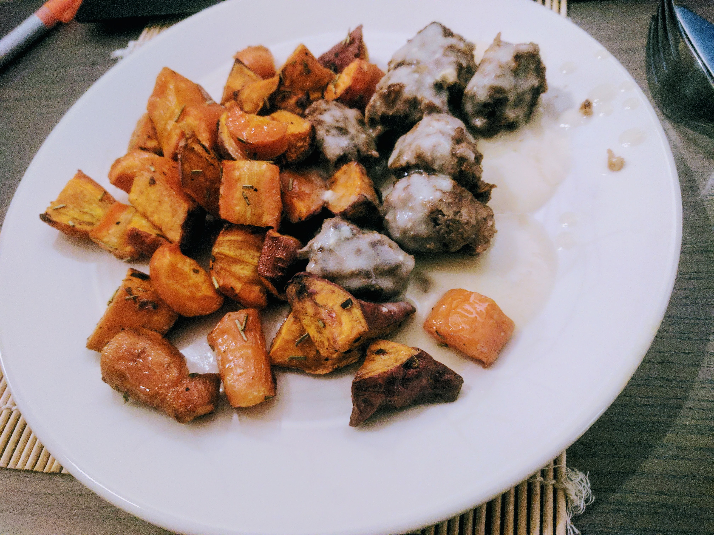

Boulettes de viande à la suédoise

Ici avec des [carottes et patates douces cuites au four](LegumesAuFour.html)
Pour 4 personnes :
- 600g de viande hachée (bœuf, porc, ou les deux)
- Un jaune d'œuf
- Un oignon
- Quatre cuillères à soupe de chapelure
- Deux cuillères à soupe de moutarde
- 30g de beurre
- Deux cuillères à soupe de farine
- Un demi-litre de bouillon de poulet
- Une cuillère à soupe de miel
- Une cuillère à café de sauce Worcestershire
- 15cL de crème
- Sel, poivre, huile d'olive
- Éplucher et couper l'oignon en petits bouts. Les faire dorer dans une poêle avec de l'huile d'olive jusqu'à ce qu'ils soient translucides. Pendant ce temps, préparer le bouillon.
- Mélanger viande, oignon, chapelure, la moitié de la moutarde et l'oignon. Saler, poivrer, faire des boulettes que l'on fait cuire dans la même poêle à feu moyen.
- Faire fondre le beurre au fond d'une petite casserole avec la farine. Bien mélanger pour faire un roux.
- Dès que c'est homogène, rajouter le bouillon petit à petit en mélangeant. Puis, ajouter le reste de moutarde, le miel, la sauce Worcestershire et la crème, mélanger, rectifier l'assaisonnement en goûtant et laisser mijoter à feu doux.
- Finir de cuire les boulettes en les retournant pour qu'elles soient bien dorées de tous les côtés. Servir chaud avec de la purée ou des légumes au four.
Retour à la liste des recettes